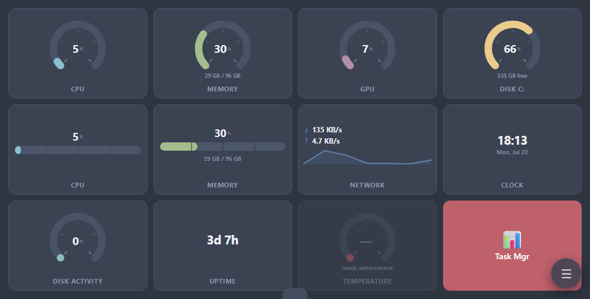
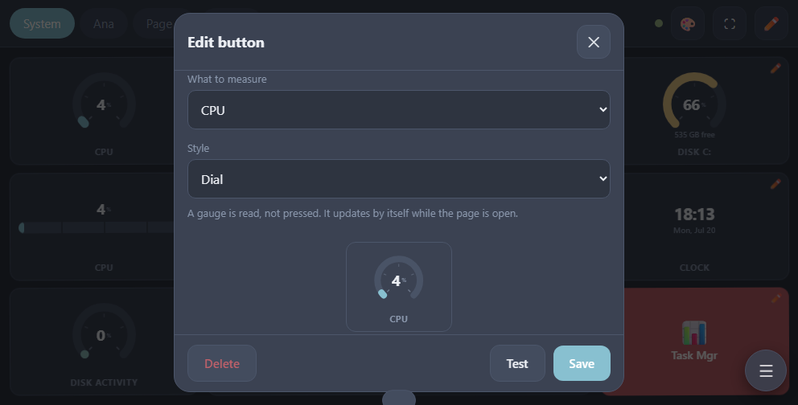

Servidor próprio · Sem loja de aplicações · Nada sai da tua rede
Transforma um tablet parado no painel de comando do teu PC
O Surecut Deck corre um pequeno servidor no teu computador Windows e serve a própria interface. O tablet apenas abre um endereço web: não há aplicação para instalar, conta para criar, nem nuvem pelo meio.

Como funciona
Três passos, uma só vez.
Ligar
Arranca o servidor
Executa start.cmd. Aparece um ícone na área de notificação e fica lá. Clica nele quando quiseres para ver os dados de emparelhamento ou abrir o editor.
Abre o endereço no tablet
A janela do servidor lista todos os endereços por onde o teu PC pode ser alcançado. Escreve um deles no navegador do tablet e depois introduz o código de emparelhamento mostrado ao lado.

Faz com que pareça uma aplicação
Toca em ⛶ para ecrã inteiro ou usa Adicionar ao ecrã principal do navegador. Em ecrã inteiro o tablet também não adormece enquanto o painel estiver aberto.
O básico
Os botões fazem mais do que carregar em teclas
Toca no lápis para entrar em modo de edição e depois toca num botão para o editar, ou mantém premido para o arrastar para outro sítio. Cada botão tem uma etiqueta, um ícone, uma cor e uma ação.


| Ação | O que faz |
|---|---|
| Atalho de teclado | Qualquer combinação: ctrl+c, win+d, alt+f4, teclas multimédia, volume |
| Escrever texto | Escreve um bloco de texto por ti, quebras de linha incluídas |
| Abrir aplicação / ficheiro | Um programa, um documento ou uma pasta |
| Abrir endereço web | Abre a ligação no navegador predefinido |
| Executar comando | PowerShell ou CMD |
| Rato | Transforma o ecrã do tablet num touchpad |
| Sequência | Vários passos por ordem, com pausas entre eles |
Ícones
Escolhe um emoji, ou usa o ícone real da aplicação
O editor tem uma grelha de ícones, por isso nunca precisas de escrever um emoji à mão. Para programas há algo melhor: arrasta o atalho a partir do ambiente de trabalho e o ícone real da aplicação vem com ele.

Ambiente de trabalho
Arrasta um atalho do ambiente de trabalho
Abre o editor pelo ícone da área de notificação: surge uma verdadeira janela de ambiente de trabalho com a mesma interface lá dentro. Larga um atalho, programa, pasta ou ficheiro sobre a faixa de cima: o destino é resolvido, o ícone da aplicação é extraído, e o botão aparece de imediato no tablet.
 Página de destinoLarga aqui
Página de destinoLarga aquiSincronização
Edita de qualquer um dos lados, ao vivo
O tablet e o editor de ambiente de trabalho são o mesmo painel visto duas vezes. Acrescenta um botão no PC e ele aparece no tablet sem recarregar nada; muda o nome de uma página no tablet e a lista de páginas do editor acompanha. Cada alteração é escrita em disco de imediato, e as últimas trinta versões ficam guardadas, por isso uma edição feita em dois dispositivos ao mesmo tempo é recusada em vez de apagar a outra em silêncio.
Ponteiro
O ecrã torna-se um touchpad
Dá a um botão a ação Rato: ao carregar nele, todo o tablet passa a ser um trackpad. Dois cursores definem a velocidade do ponteiro e do deslocamento, e o sentido do deslocamento pode ser invertido conforme o teu hábito.

| Gesto | Resultado |
|---|---|
| Arrastar | Mover o ponteiro |
| Tocar | Clique esquerdo |
| Toque duplo | Duplo clique |
| Toque duplo e arrastar | Manter o botão esquerdo e mover: selecionar texto, arrastar uma janela |
| Manter premido | Clique direito |
| Botão Segurar | Trava o botão esquerdo em baixo, para arrastares em vários movimentos sem manter o dedo no ecrã |
| Botão Meio | Clique do meio: fechar um separador, abrir uma ligação noutro |
| Dois dedos | Deslocar, na vertical e na horizontal |
| Toque com dois dedos | Clique direito |
| Pinçar | Zoom |
| Três dedos ↑ / ↓ | Vista de tarefas / mostrar ambiente de trabalho |
| Três dedos ← / → | Mudar de ambiente de trabalho virtual |
Espaço
Desliza entre páginas
Agrupa os botões em páginas: uma para edição, outra para jogos, outra para aquela reunião de onde nunca sais. Desliza para a esquerda ou para a direita em qualquer ponto do painel para mudar de uma para outra; o nome da página aparece por instantes, para saberes onde foste parar. Em modo de edição o mesmo gesto reordena os botões, por isso os dois nunca se atropelam. Para mover uma peça para outra página, arrasta-a para o separador dessa página.

Espaço
Páginas, colunas e o botão flutuante
Em modo de edição a barra de baixo acrescenta e remove páginas e define quantas colunas a grelha usa. A contagem de colunas pertence à página em que estás, por isso uma página de medidores pode ter quatro colunas enquanto uma página de atalhos tem cinco. Toca outra vez no separador de uma página para lhe mudares o nome. O botão flutuante leva-te às páginas, ao editor e aos temas mesmo com as barras escondidas, e podes arrastá-lo para onde te der jeito, já que é a única coisa sempre no ecrã.

Leituras
Põe os sinais vitais da máquina no painel
Uma peça pode ser um medidor em vez de um botão: processador, memória, gráficos, espaço em disco, atividade do disco, tráfego de rede, temperatura, tempo ligado e um relógio. Os medidores ficam na mesma grelha dos botões, por isso as páginas, as colunas, o esticar para preencher e o arrastar para reordenar funcionam neles sem teres de aprender nada de novo. São para ler e não para carregar, por isso são desenhados como instrumentos embutidos na superfície e não como peças preenchidas.

| Medidor | O que mostra |
|---|---|
| CPU | Carga do processador em todos os núcleos |
| Memória | Em uso em percentagem, com os valores reais por baixo |
| GPU | Carga dos gráficos |
| Disco | Quão cheia está uma unidade; escolhes qual |
| Atividade do disco | Quão ocupados estão os discos |
| Rede | Tráfego de subida e de descida, com o traço do último meio minuto |
| Temperatura | Do sensor térmico da placa-mãe |
| Tempo ligado | Há quanto tempo a máquina está a funcionar |
| Relógio | As horas, que não precisam de medição nenhuma |
Leituras
Acrescenta um da mesma forma que acrescentas um botão
Em modo de edição, acrescenta uma peça e define a sua ação como Medidor do sistema. Escolhe o que medir, se é desenhado como mostrador ou como barra, e a sua cor. A pré-visualização por baixo é ao vivo e mostra a leitura real antes de guardares. Deixa a etiqueta vazia e o medidor dá nome a si próprio.

Aspeto
Onze temas, e os botões acompanham
A maioria dos temas vem de esquemas de cor conhecidos entre programadores (Nord, Gruvbox, Solarized, Catppuccin Mocha, Rosé Pine), mais dois visuais de terminal propositadamente a duas cores e um claro e um escuro neutros. Ao mudar de tema, as cores dos teus botões são convertidas para a nova paleta mantendo os tons: um botão azul passa a ser o azul do novo tema e a tua disposição continua a ler-se igual.


Ecrã
Usa o ecrã todo
Esticar os botões para preencher o ecrã faz as linhas dividirem toda a altura: duas linhas de botões enchem o ecrã em vez de deixarem um vazio em baixo. Ocultar automaticamente as barras remove por completo a barra de cima e a de baixo e deixa só os botões. O botão flutuante traz-nas de volta, ou mantém premida uma área vazia durante três segundos.
Idioma
Vinte idiomas, escolhidos automaticamente
A interface vem em inglês, turco, espanhol, francês, alemão, italiano, português, russo, ucraniano, polaco, árabe, persa, urdu, chinês, japonês, coreano, hindi, bengali, indonésio e vietnamita. Segue o idioma do navegador enquanto não escolheres um, e o árabe, o persa e o urdu mudam a disposição para da direita para a esquerda. A escolha é por dispositivo, por isso o tablet e o editor de ambiente de trabalho podem diferir.
Vale a pena saber
- Firewall
- O Windows pode pedir para permitir a ligação da primeira vez. Se o tablet não alcançar o servidor, permite-a para redes privadas.
- VPN
- Alguns clientes VPN bloqueiam o tráfego da rede local. Se nada ligar, experimenta com a VPN desligada.
- Janelas de administrador
- Um programa a correr como administrador não aceita entrada de um programa normal. Corre o servidor como administrador se precisares que os atalhos cheguem a essas janelas.
- Código de emparelhamento
- Qualquer pessoa na tua rede que tenha o código pode controlar o PC, incluindo executar comandos. Guarda-o para ti e não alojes em redes em que não confias.